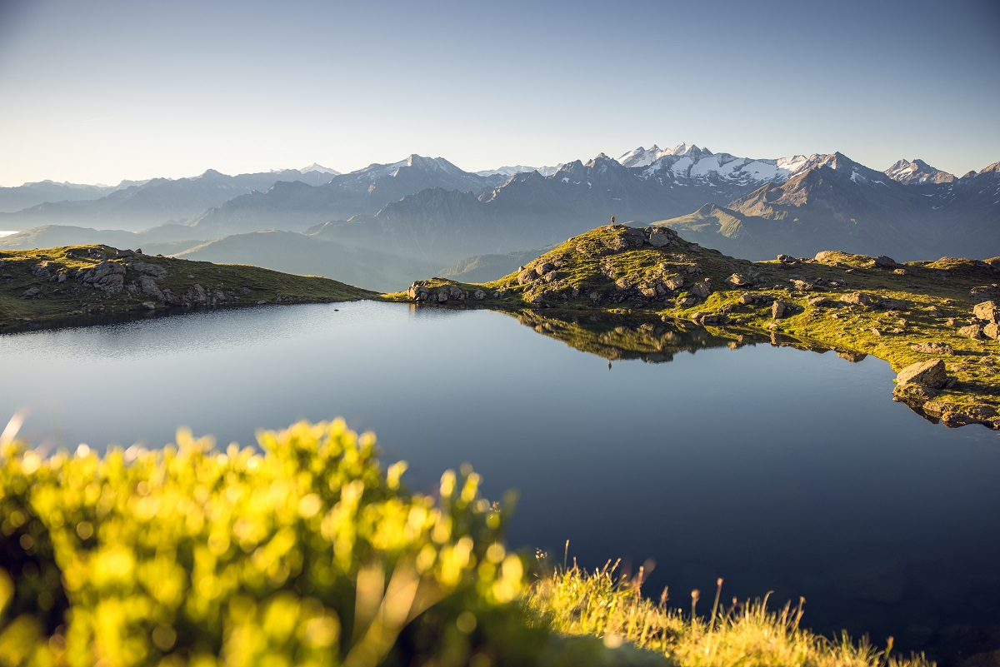
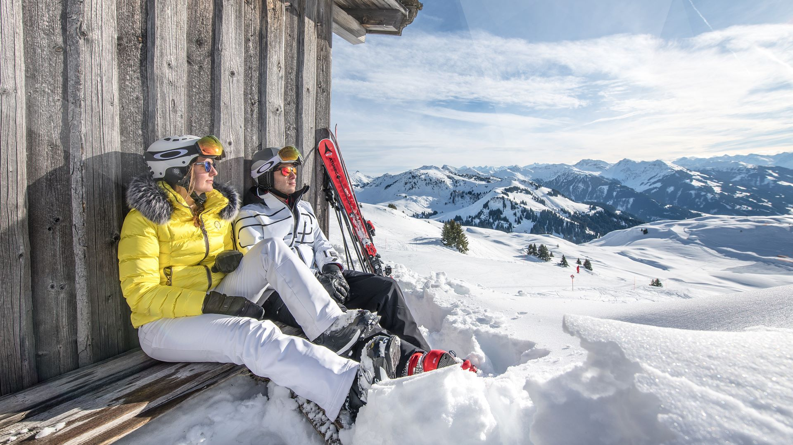
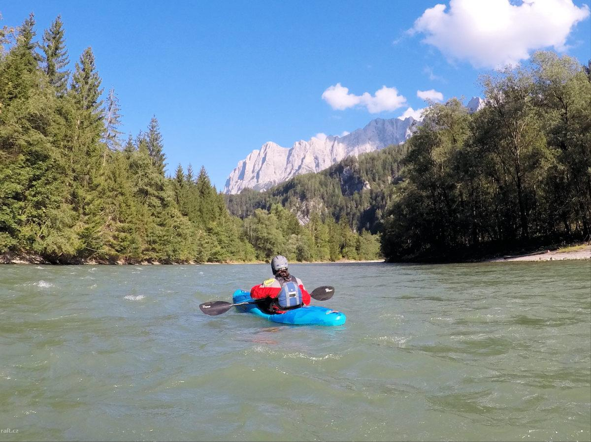
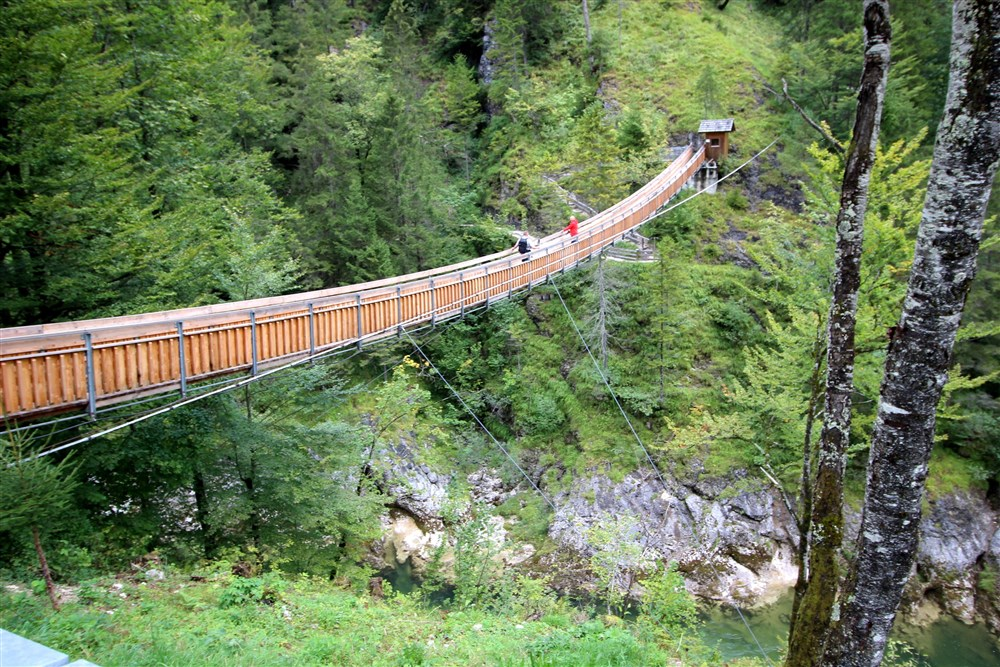
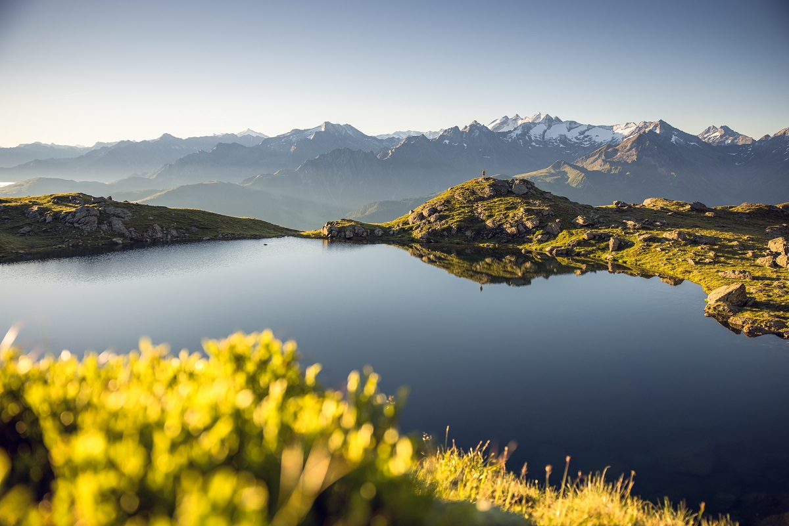
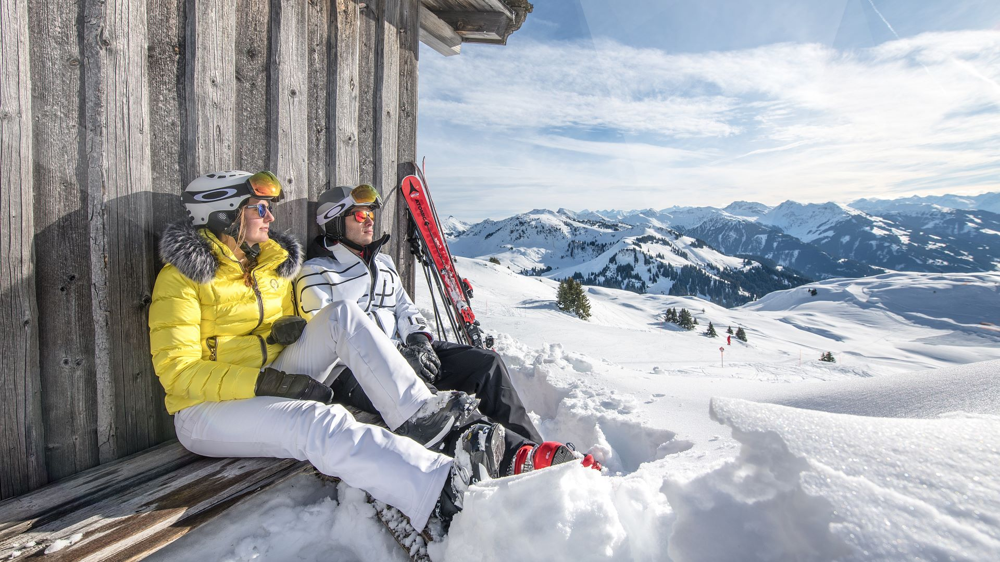
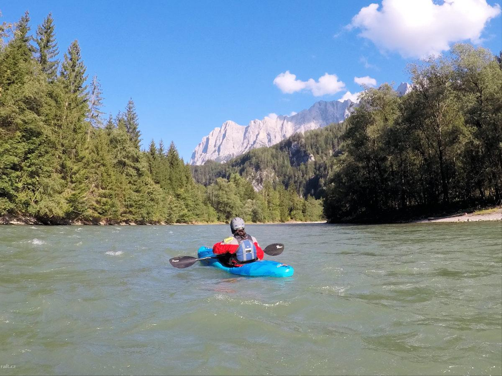
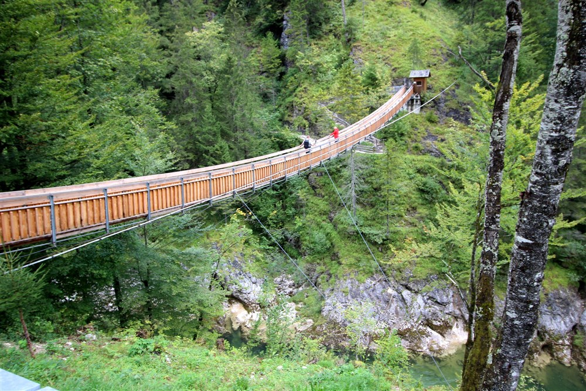

Do přírody
nejen
na kole
fotogalerie pro radost
(klik na fotografii pro větší obrázek)
 







Inspirativní videa
Tipy na výlet:
Dlouhé stráně


Přečerpávací vodní elektrárna Dlouhé stráně se v roce 2005 zařadila mezi 7 největších divů České republiky (zdroj idnes.cz). Zařadila se tak mezi nejvýznamnější české památky jako jsou třeba hrad Karlštejn nebo zámek Hluboká. V samotném finále hlasovací soutěže se stala dokonce největším divem České republiky, kdy pro ni hlasovalo 119 158 občanů. Od roku 2010 je horní nádrž přečerpávací vodní elektrárny Dlouhé stráně přístupná 6-sedačkovou lanovkou z blízkého lyžařského areálu Kouty. Lanovka vás vyveze 4,5 km pod horní nádrž. K ní se potom dostanete pěšky, na kole nebo využitím minibusu, který tam jezdí kyvadlově. Nově je přístupná 2,5 km trasa lesem po červené, která vede až na korunu horní nádrže. Areál Kouty nabízí i další možnosti sportovního využití. Více informací najdete na https://www.kouty.cz/
Rešovské vodopády


Rešovské vodopády jsou jedním z nejoblíbenějších cílů turistů i cykloturistických cílů. Říčka Huntava zde v kaňonovitém údolí vytváří kaskády a vodopády. V místech vodopádů překonává Huntava pruh tvrdší horniny (porfyroidu). Nejvyšší stupeň je 10 metrů vysoký. Scenerie je působivá zejména při vyšším průtoku. Celé území o rozloze 6 ha je pokryto přirozenými smrkovými lesy. Nejsnadnější přístup k vodopádům na Huntavě je z vesnice Rešov, vzdálené 1 km. Pod vodopády kdysi pracoval vodní mlýn. Rešovské vodopády se nacházejí na říčce Huntavě v Nízkém Jeseníku, 8 km od Rýmařova. Rešovské vodopády na řece Huntavě (pramenící na Skalském rašeliništi) byly vyhlášeny za chráněný přírodní výtvor.Více informací najdete na https://resovske-vodopady.cz/
Lužická jezera


Lužická jezera jsou ideální oblastí pro cykloturistiku. Pokud máte rádi rovinaté terény a pohodové trasy vedoucí rozmanitou krajinou, pak je tato oblast pro vás jako stvořená. Díky profilu tras zde můžete na cyklo či in-line výlet bez obav vyrazit i s malými dětmi.Pokud chcete v oblasti Lužických jezer vyrazit na kolo, můžete samozřejmě využít jakoukoliv z in-line tras popsaných v sekci in-line bruslení. Jelikož ale na kole na rozdíl od in-line bruslí nemusíte jezdit pouze po asfaltu, přinášíme vám i tipy na trasy, které můžete projet pouze na kole.Část tras vede okolo jezer či mezi nimi, ale některé vás zavedou i do vzdálenějších lokalit. Jelikož Lužická jezera jsou oblastí, která byla původně plná povrchových dolů, můžete zde stopy po těžbě stále vidět. Je zde i několik dolů, které jsou stále funkční, nebo ještě nejsou zatopené. Zde můžete vidět, jak celá oblast několik desítek let zpátky vypadala a jak velký kus práce zde byl učiněn, aby zde vznikla tato nádherná rekreační oblast. Výlety k povrchovým dolům jsou zajímavým zpestřením výletů v této oblasti.Více informací najdete na http://www.luzicka-jezera.cz/
Pekelný kopec


Rozhledna na Pekelném kopci je postavena z modřínového dřeva s ocelovým schodištěm. Inspiraci pro stavbu čerpal architekt Pavel Jura z nedaleké Třebíče a její židovské historie - proto je půdorys rozhledny ve tvaru šesticípé Davidovy hvězdy, což je patrné zejména při pohledu z vrchu. Hlavním inspiračním zdrojem pak byla třebíčská Bazilika sv. Prokopa , která je s Pekelným kopcem spojena čertovskou pověstí. Pekelný kopec, lidově zvaný také Pekelňák, získal své jméno podle pověsti o ďáblovi. V místech dnešní třebíčské baziliky měl svatý Prokop zkrotit samotného ďábla. Pak s ním pořádně zatočil a odhodil jej až na vrch, jenž od té doby nese název Pekelný. Na počest svatého Prokopa pak byla postavena bazilika, vysvěcená na jeho počest. Více informací najdete na https://turistickamapa.cz/rozhledna-pekelny-kopec/ Video o rozhledně v sekci videa zde
Tipy na kola
MTB tipy

Popis produktu
Za kolo, které zvládne vše od enduro závodů až po náročné sjezdy ve velkých horách nebo drsné bikeparky, byste neměli utrácet majlant. Zcela nové kolo ONE-SIXTY 500 má naši novou radikální geometrii a konstrukci odpružení v odolném celohliníkovém rámu, spojenou s komponenty, které poskytují solidní výkon a výbornou hodnotu. Vidlice RockShox Yari a tlumič Deluxe zvládnou drsnější podmínky, zatímco čtyřpístkové brzdy Shimano a široký rozsah pohonu jsou odolné a konzistentní.
Evoluce nebo revoluce? Co takhle obojí? Model 2022 ONE-SIXTY je radikální, zcela nový design, který posouvá naši platformu pro tvrdé enduro do nových výšin. Stejně tak dobře, protože jakmile se tam jednou dostane, je připraven zdolávat i ty nejdelší a nejnáročnější sjezdy. Náš nový systém odpružení využívá konstrukci flexstay s nastavitelným vahadlem, takže ať už se rozhodnete jezdit na něm jako na plnohodnotném 29" kole (zdvih 162 mm) nebo na smíšeném 29/27,5" setupu (zdvih 171 mm), geometrie zůstane zachována. K dispozici je radikálně strmý úhel sedlové trubky 79° pro stoupání jako na koze a volný hlavový úhel 64° plus 170 mm vidlice, která si poradí s chaosem na sjezdových tratích. Nové rozměry umožňují jezdcům používat rám s delším nebo kratším rozvorem nezávisle na jejich výšce, zatímco odpružení se s rostoucí velikostí stává progresivnějším, a to vše s dlouhým zdvihem dropperů. Naše vedení kabelů WIRE PORT, spolehlivý spodní držák se závitem plus úložný prostor na nářadí, zatímco karbonové rámy nabízejí také magnetické košíky na láhev FidLock.
Specifikace kola
Ročník 2023 Rám ONE-SIXTY LITE III; 171 STR mullet / 162 STR 29"; MAT aluminium; 29x2.5" max. WHS; 148x12 AST; BSA BBR Zdvih přední 170 mm Zdvih zadní 162/171 mm Vidlice Rock Shox Yari RC; Air; 170 STR; Tapered; 42mm fork offset; 29.5x2.8" max. WHS Tlumič Rock Shox Deluxe Select+; platform Řazení Shimano Deore M5100 Přehazovačka Shimano Deore M6100 Shadwo+ Kazeta Shimano Deore M5100; 11-51 ATC; 11 GER Řetěz KMC X11 Kliky Race Face Ride; 32 ATC 170 mm-S up Hlavové složení MERIDA-8151 1-1/8"-1.5" cartridge bearing set Představec MERIDA EXPERT eTRII; MAT aluminium; 35 DSH; 0 ASD Řidítka MERIDA TEAM TR; MAT aluminium; 780 WHB; XS/S 18 RHB; M/L/XL 30 RHB Brzda přední Shimano Deore M6120; 4 piston, Shimano RT30; 203 mm Brzda zadní Shimano Deore M6120; 4 piston, Shimano RT30; 203 mm Nába přední Shimano MT400-B; 110x15 WHF; 32 SPH; Centerlock Nába zadní Shimano MT400-B; 148x12 WHR; 32 SPH; Centerlock Ráfky MERIDA COMP TR; 29 IWR; MAT aluminium; Tubeless ready (tubeless tape and valves not included); rear 27.5" up to Size M / L & XL rear 29" Dráty Double Butted Black stainless Pláště Maxxis Assegai; 29x2.5"; fold; TR EXO+ 3C MaxxGrip / Maxxis DHR; 27.5x2.4" XS/S/M 29x2.4" L/XL; fold; TR DD 3C MaxxTerra Sedlovka MERIDA EXPERT TR II; 34.9 DSP; 0 SSB; XS: 125 SPT - S: 150 SPT - M/L/XL: 200 SPT Sedlo MERIDA COMP SL; V-mount Pedály -
CANNONDALE SCALPEL 29 Carbon 3 2022

Popis produktu
Odpružení navržené pro rychlost Nejpokrokovější odpružení pro XC, které kdy bylo vytvořeno. Zatímco ostatní obětují výkon, aby ušetřili gramy, náš patentovaný systém FlexPivot nabídne obojí. Je neskutečně lehký a nabídne vynikající grip, akceleraci a kontrolu. Díky němu můžete jet naplno všude. Více rychlosti, více zábavy. Stupně rozdílu Progresivní geometrie Scalpelu se ještě více vyvinula – hlavová trubka je položenější o 1,5°, sedlová trubka je o stupeň vzpřímenější. Díky tomu je výsledkem XC kolo, které je agresivnější, rychlé jako blesk, zábavné a stabilní za všech okolností. Nezáleží na tom, jestli jedete závod světového poháru nebo se jen jedete projet na nejbližší trail. Tuhý, lehký, rychlý S hmotností jen lehce přes 1900 gramů včetně tlumiče je rám Scalpelu jedním s absolutně nejlehčích celoodpružených rámů, jaké kdy byly vyrobeny. Neuvěřitelné odpružení, skvělé řízení a nízká hmotnost – je to recept na vítězství.Lefty je zkrátka nejpokrokovější, vidlice s nejhladším chodem a precizním řízením. To vše v ultralehkém balení. Díky své konstrukci, která nemá v cyklistice obdoby, se můžete vydat do těch nejtěžších pasáží.
Specifikace kola
Ročník 2021 Rám All-New, 100mm travel, BallisTec Carbon, Proportional Response Tuned, FlexPivot Chainstay, PF30-83, Tapered Headtube,Speed Release 12mm thru axle, Ai Zdvih zadní Fox Float DPS Performance Elite EVOL, remote lockout, adjustable rebound Vidlice Lefty Ocho, 100mm, Chamber Damper with remote lockout, OppO Spring System, tapered steerer, 55mm offset Řazení Shimano SLX, 12-speed Přesmykač N/A Přehazovačka Shimano XT Kazeta Shimano SLX, 10-51, 12-speed Řetěz Shimano SLX, 12-speed Kliky HollowGram, BB30a, OPI SpideRing, 34T, Ai offset Hlavové složení Integrated, 1-1/8 to 1.5", sealed angular contact bearings Představec Cannondale 3, 6061 Alloy, 31.8, 7 Řidítka Cannondale 2 Flat, butted 2014 Alloy, 31.8mm, 3 rise, 8 sweep, 760mm Brzda přední Shimano Deore hydraulic disc, 160/160mm RT54 rotors Nába přední (F) Lefty 60 / (R) Shimano MT510 12x148mm thru-axle Ráfky Stan's NoTubes Crest S1, 28h, tubeless ready Dráty DT Swiss Champion Pláště (F) Schwalbe Racing Ray Performance, 29 x 2.25", Addix Compound, tubeless ready, (R) Schwalbe Racing Ralph Performance, 29 x 2.25", Addix Compound, tu Sedlovka Cannondale 2, 7075 Alloy, 31.6 x 400mm Sedlo Prologo Dimension NRD, STN rails Pedály Not included Velikosti SM, MD, LG, XL
MTB-GT AVALANCHE 29

Popis produktu
Horské kolo GT Avalanche 29 Expert 2022 ve fialové barvě je ideální na rekreaci, ale je vhodný i pro začínající závodníky. Kvalitu vám zaručí technologie od GT, které jsou zakomponované na velmi kvalitní hliníkové konstrukci Triple Triangle. Kolo disponuje 29" koly a progresivní geometrií, takže ovladatelnost je mnohem lepší a lehčí. Potěší vás také mnohem snadnější servis. S tímto kolem budete mnohem rychleji zvládat rekreační výlety, ale hlavně budete v rychlosti konkurovat těm nejlepším v závodním poli. Díky kazetě SRAM Eagle o rozsahu 50 zubů a 12 rychlostí je řazení velmi snadné a rychlé. Vy si tak dokážete snadno poradit s každým kopcem a nebude zahálet ani na rovince. Na kole je špičková hliníková konstrukce Triple Triangle. Tento univerzální rám rozmělňuje vibrace po celém kole a tím pádem minimalizuje přenos vibrací do sedlové trubky. Kvalita tohoto materiálu vám zajistí i mnohem delší životnost kola. Vy tak můžete požívat kolo častěji a déle.
Specifikace kola
Ročník 2021 Rám GT 6061 T6 Aluminum Frame, Triple Triangle w/ Floating Seat Stays, Internal Cable Routing, Dropper Post Routing, Boost 141 Forged Drop-outs w/ Disc Br Vidlice RockShox TBD Řazení SRAM SX Eagle, 12-speed Přehazovačka SRAM SX Eagle Kazeta SRAM Eagle 11-50, 12 Speed Řetěz SRAM SX Eagle, 12-speed Kliky SRAM SX Eagle Power Spline, 32T Hlavové složení Semi-integrated, Sealed Cartridge, Tapered Představec GT All Terra 3D Forged Alloy, 31.8, 7, 80mm Řidítka GT All Terra Alloy Riser, Double-Butted, 15mm Rise, 9 Sweep, 5 Rise, 740mm Width Brzda přední Shimano MT400 Hydro Disc, 160/160mm RT10 Rotors Ráfky WTB ST i25 TCS 2.0, 32h, Tubeless Ready Dráty Stainless Steel, 14g Pláště Vittoria Barzo, 27.5/29 x 2.25", Wire Bead Sedlovka GT All-Terra Micro Adjust Alloy Seat Post, 30.9mm Sedlo WTB Silverado Sport Pedály GT Slim Line Flat Pedal
Gravel tipy
OCTANE ONE GRIDD

Popis produktu
GRIDD je skvělá základní bruska na štěrk. Lehký rámový set s karbonovou vidlicí tvoří větší pohodlí při dlouhých výletech. Geometrie modelu GRIDD je poměrně úzká a agresivní, ale zároveň dostatečně pohodlná, aby vás provedla dlouhými cyklistickými eskapádami. Spolehlivý 1x pohon od SRAM s kazetou s širokým rozsahem vám umožní absolvovat i ta nejtěžší stoupání. Na tomto kole se vám nikdy nebude chtít přestat jezdit, ale když to bude opravdu potřeba, kotoučové brzdy vás nenechají na holičkách. Lze jej snadno přeměnit na kolo pro dojíždění do práce nebo dobrodružství, protože má všechny otvory pro montáž nosičů a blatníků, které byste kdy potřebovali. Prostě si ho pořiďte a jezděte!
HLAVNÍ FUNKCE
- spousta volného prostoru pro pneumatiky: 700C až 42C (v závislosti na výrobci)
- mechanické kotoučové brzdy
- konstrukce s průchozí nápravou
- uchycení na blatník a nosič
- široká škála použití: šotolina, CX, vytrvalostní silnice
- velikosti rámů: S/M/L/XL
- barevné varianty: modrozelená metalíza
Specifikace kola
Rám Custom formed and butted 6061 aluminum frame, 142×12 dropouts Vidlice carbon blades, alloy steerer, 12×100, tapered 1-1/8”-1.5” Řazení Sram Apex 1 Přehazovačka Sram Apex 1 Kazeta Sram PG 1110 Řetěz Sram PC 1110 Kliky Sram Apex 1, 40t Hlavové složení Octane One tapered 1&1/8″-1.5″ IS42/IS52, sealed bearing Představec Octane One Road 31.8 Řidítka Octane One Flare 420 (S), 440 (M), 460 (L,XL) 31.8 Brzda přední TRP Spyre mechanical disc brake 160mm Brzda zadní TRP Spyre mechanical disc brake 160mm Nába přední Shimano FH-RS470, 12x100 disc (loose ball) Nába zadní Shimano FH-RS470, 142x12mm (loose ball) Ráfky Octane One by Shining 700c 28h, tubeless ready Dráty Spokes w/14mm nipples Pláště Schwable G-ONE BITE 700x40c Sedlovka Octane One alloy, 27.2 Sedlo Octane One Crit, synthetic cover, cromo rails Hmotnost 10,4 kg
SUPERIOR X-ROAD Team Issue R

Popis produktu
Tohle kolo je definicí Superior. Ať jde o zpracování rámu, design nebo funkčnost, cílili jsme jen na to nejlepší. Rámová sada doladěná do posledního detailu pro maximální tuhost, rychlost a výkon na silnici bez kompromisů. Dokonalá integrace lanek a hadic nejen v rámu, ale i v novém karbonovém kombu řídítek a představce podtrhuje funkční minimalistický design. Pro větší pohodlí na nekvalitních silnicích osazujeme X-Road 30 mm bezdušovými plášti a rám pojme dokonce gravelovou šířku 40 mm. Nová elektronická sada Shimano Ultegra Di2 2x12 splňuje nejnáročnější závodní požadavky, stejně jako set bezdušových karbonových zapletených kol DT Swiss ERC 1400 Spline 47 mm s pevnými osami. Samozřejmostí jsou u našich top modelů ultralehké karbonové doplňky, pohodlná sedlovka s D profilem a skrytým zámkem v rámu, nové karbonové kombo řídítek a představce a špičkové závodní sedlo Fizik. Oceníte chytré detaily jako skryté montážní body pro uchycení lehkých blatníků, nebo magnetickou odnímatelnou páčku pro montáž pevných os.
Specifikace kola
Rám Carbon X-Road Race Mid Modulus, Road Advanced Geometry, Disc Brake Flat Mount, BB865, SH dropout, Thru Axle 135x12 mm, Inner Cable Routing, Di2 compat Vidlice X-ROAD carbon fork Přesmykač SHIMANO ULTEGRA FD-R8150, DOWN SWING, BRAZED-ON Type Přehazovačka SHIMANO ULTEGRA RD-R8150 Shadow Kazeta SHIMANO CS-R8100-12, 11-34T Řetěz SHIMANO CN-M8100 Kliky SHIMANO ULTEGRA FC-R8100 Hollowtech II, 50-34T Hlavové složení ACROS AIX-525, OD56, IS52/28.6, ICR-IS52/40IPS Řidítka Karbonové kombo řídítek a představce Brzda přední SHIMANO ST-R8170, hydraulic disc brake Brzda zadní SHIMANO BR-R8170, hydraulic disc brake Nába přední DT Swiss ERC 1400 Spline DB45; 12x100mm, CENTER LOCK Nába zadní DT Swiss ERC 1400 Spline DB45; 12x142mm, CENTER LOCK Pláště Schwalbe Pro One Evo, 700x30C, ADDIX Sedlovka ONE1 Carbon, SP0225380AERO Sedlo Fizik Vento Argo R5 Pedály - Barvy MATTE BLACK/STEALTH CHROME Velikosti 52 cm (S), 54 cm (M), 56 cm (L), 58 cm (XL)
AUTHOR Aura XR6

Popis produktu
Nejvyšší model sportovního gravelového kola Author Aura XR6 vyjíždí na velmi lehkém, 3× zeslabovaném duralovém rámu s velmi univerzální geometrií. Nabízí prakticky stejné osazení jako karbonový topmodel Guru, ale za výrazně dostupnější cenu. Rám s karbonovou vidlicí disponuje všemi moderními vlastnostmi, jako jsou pevné osy vpředu i vzadu, závitové vložky připravené na montáž nosičů i blatníků a hydroformní tvarování. Nechybí hydraulické kotoučové brzdy Shimano a značková bezdušová zapletená kola Mavic Allroad. Změnu převodů má na starost speciální gravelová sada Shimano GRX ve verzi 2 × 11 rychlostí. Vlastnosti kola lze jednoduše změnit osazením vhodných plášťů. V základní verzi s plášti Panaracer GravelKing 700 × 38 je to rychlý sportovní gravel, který pojede stejně dobře po silnici jako po šotolinové cestě. Při výměně za užší silniční gumy se z něj stane asfaltová raketa, která prožene i klasické silniční speciály. Pokud obujeme širší pláště se vzorkem, zvýší se výrazně jeho terénní schopnosti a pohodlí. Při osazení nosiči a brašnami se z něj může stát i expediční speciál.
Specifikace kola
Size 500, 520, 540, 560, 580 mm Frame triple butted dural 6061 FrontFork AUTHOR karbonová 1.5" tapered HeadParts PRESTINE Integrated 1.5" tapered ChainWheel FSA Gossamer Pro, 46-30 zubů, 172.5 / 175 mm kliky BBParts FSA BB-6000, BB unit FrontDerailleur SHIMANO GRX 810 RearDerailleur SHIMANO GRX 810 Shifters SHIMANO GRX 600 (22) FreeWheel SHIMANO HG701-11, 11-34 (11) Chain KMC X11 EL Hubs MAVIC Allroad UST Disc CL, zapletená kola, 20 děr, 12 × 100 mm přední pevná osa, 12 × 142 mm zadní pevná osa Brakes SHIMANO GRX 400, kotoučové hydraulické (160 mm kotouče) BrakesLevers SHIMANO GRX 600 FrontRim MAVIC Allroad Disc CL UST zapletená kola, 20 děr Spokes MAVIC FrontTire PANARACER Gravel King SK skládací 700 × 38c RearTire PANARACER Gravel King SK skládací 700 × 38c HandlBar RITCHEY Road ErgoMax, 420 / 440 / 460 mm Stem RITCHEY Comp 4-Axis SeatPost RITCHEY 2B Comp (27.2) SeatClamp AUTHOR (31.8) Saddle AUTHOR Guru CR Speed 22 Weight 9,8 kg / 54 cm Tapes AUTHOR microfiber / gel
Silnice tipy
MERIDA SCULTURA 5000

Popis produktu
Nejúspěšnější SCULTURA v naší nové sestavě. Model 5000 kombinuje nově navržený rám CF3, který nastavuje nová měřítka v oblasti hmotnosti, aerodynamické účinnosti a jízdního komfortu, s vysoce kvalitními, ale citlivě vybranými komponenty, které tomuto kolu poskytují téměř bezkonkurenční poměr ceny a výkonu. Pokud tedy začínáte závodit, rádi vyzýváte své klubové přátele ve stoupáních a sjezdech nebo si užíváte dlouhé kilometry v sedle, může být model 5000 vaším ideálním kolem. Novinkou pro rok 2022 je pátá generace našeho lehkého závodního kola. Nový model SCULTURA obsahuje vybrané aerodynamické detaily z našeho testovaného a oceňovaného aerodynamického kola REACTO, a je tak nejlépe aerodynamický v historii. Přesto zůstává věrná svému zaměření na nízkou hmotnost, obratnost a pohodlí jezdce; ve skutečnosti tyto faktory posouvá na další úroveň. Nová SCULTURA vykazuje vynikající poddajnost a poskytuje jezdci prvotřídní jízdní komfort, který pomůže udržet tělo svěží pro závěrečný sprint nebo stoupání. Nové karbonové verze CF5 a CF3 sdílejí geometrii s naším modelem REACTO, který jezdci týmu Bahrain Victorious poskytuje závodní jízdní vlastnosti osvědčené v závodech. Naše klasické silniční kolo, které je k dispozici v karbonovém a hliníkovém provedení a ve variantě s kotoučovými nebo ráfkovými brzdami, kombinuje vynikající pohodlí se svižným zrychlením a prvotřídním stoupáním.
Specifikace kola
Ročník 2023 Rám SCULTURA CF3 V material: carbon 700x30C max. wheelsize 100x12/ 142x12mm axle standard Pressfit 86,5 Vidlice SCULTURA CF3 Disc material: carbon 700x30C max. wheelsize Řazení Shimano Ultegra Disc Přesmykač Shimano Ultegra Přehazovačka Shimano Ultegra GS Kazeta Shimano CS-R7000 11-30 teeth 11 speed Řetěz KMC X11 Kliky Shimano RS510 50-34 teeth 165 mm-XXS/XS, 170 mm-S, 172.5 mm-M, 175 mm-L/XL Hlavové složení FSA ACR Představec FSA SMR ACR material: aluminium -6° stem angle 90 mm-XXS/XS, 100 mm-S, 110 mm-M, Řidítka MERIDA EXPERT SL material: aluminium 380mm(XXS) 400mm (XS-S) 420mm (M) 440mm (L- Brzda přední Shimano Ultegra Hydraulic Disc / Shimano RT54 160mm Brzda zadní Shimano Ultegra Hydraulic Disc / Shimano RT54 160mm Nába přední VP CLK170F 100x12mm width front hub 28 spoke holes Centerlock Nába zadní VP CLK270R 142x12mm width rear hub 28 spoke holes Centerlock Ráfky MERIDA EXPERT SL 17mm inner width 22mm height material: aluminium Tubeless ready (tubeless tape and valves not included) Pláště Continental Ultra Sport III 700x28C fold Sedlovka MERIDA EXPERT CC 27.2mm diameter 15mm setback Carbon Sedlo MERIDA EXPERT SL V-mount incl. MERIDA minitool Pedály -
CUBE AGREE C:62 RACE

Popis produktu
Největší překážkou rychlé jízdy nejste vy sami. Je to vaše kolo. Proto jsme se v případě modelu Agree C:62 inspirovali u našich elegantních, vrcholových modelů závodních silničních a časovkářských kol, abychom vytvořili rám, který bude prorážet vzduch rychlostí stejně lehce, jak lehký je. Tento skvělý univerzál je nejen lehký, ale také komfortní, a proto jsme ještě vylepšili karbonové vrstvy, použili tenké sedlo a dali si záležet na profilování trubek. Polointegrované vedení lanek přispívá ke snížení víření vzduchu a snižuje nároky na údržbu. A nezapomněli jsme na úložný box, do kterého si můžete schovat jídlo, nářadí a další vrstvu oblečení, abyste mohli vyjet i na dlouhé výlety.
Specifikace kola
Ročník 2023 Rám C:62® Advanced Twin Mold Technology, Internal Cable Routing, Integrated Seat Post Clamp, Flat Mount Disc, Storage Box Option, AXH, 12x142mm Vidlice CUBE CSL Evo Aero C:62® Technology, 1 1/8" - 1 1/4" Tapered, Flat Mount, 12x100mm Řazení Shimano Ultegra Di2 ST-R8170 Přesmykač Shimano Ultegra Di2 FD-R8150-F Přehazovačka Shimano Ultegra Di2 RD-R8150-DGS. 12-Speed Kazeta Shimano Ultegra CS-R8100, 11-34T Řetěz Shimano CN-M8100 Kliky Shimano Ultegra FC-R8100, Hollowtech II, 50x34T Hlavové složení ACROS, Top Integrated 1 1/2" w/ Integrated Cable Routing, Bottom Integrated 1 1/4" Představec CUBE Aero Stem w/ Cable Routing Řidítka Newmen Advanced Wing Bar, Carbon Brzda přední Shimano Ultegra BR-R8170, Hydr. Disc Brake, Flat Mount 160 mm Brzda zadní Shimano Ultegra BR-R8170, Hydr. Disc Brake, Flat Mount 160 mm Nába přední Fulcrum Racing 400 DB Nába zadní Fulcrum Racing 400 DB Pláště Conti Grand Sport Race SL, 28-622 Sedlovka Agree C:62® Aero, Comfort Flex Sedlo Natural Fit Nuance Pedály - Barvy carbon´n´black Velikosti 50, 53, 56, 58, 60, 62 Hmotnost 8,3 kg
MERIDA SCULTURA ENDURANCE 6000

Popis produktu
Pokud hledáte mimořádně pohodlné silniční kolo, které si snadno poradí s drsnějším povrchem silnice a usnadní vám dlouhé silniční výlety, pak už nemusíte hledat dál. Kolo SCULTURA ENDURANCE 6000 je vybaveno naším lehkým karbonovým rámem CF3 s geometrií zaměřenou na pohodlí, volným prostorem pro pláště široké až 35 mm a celokarbonovou vidlicí pro dodatečné tlumení nárazů. Superhladký pohon Ultegra v kombinaci s výkonnými kotoučovými brzdami zajišťuje perfektní kontrolu řazení a brzdění. Naše kolo SCULTURA ENDURANCE, které bylo uvedeno na trh v roce 2021, zaměřené na pohodlí, se okamžitě stalo hitem mezinárodního cyklistického tisku. Kromě toho, že mu RennRad udělil ocenění "comfort", se mu podařilo získat také dlouhý seznam komplimentů jako "excellent comfort", "confidence inspiring", "lively feel" a "enjoyable" od referenčních cyklistických webů/časopisů jako Gran Fondo, Cyclingnews, Cyclingtips a Road.cc. V porovnání se svým jmenovcem, modelem SCULTURA, má ENDURANCE pohodlnější geometrii, velkou světlou výšku plášťů a bezproblémovou integraci nejnovějších standardů. SCULTURA ENDURANCE, pevně usazený v silniční řadě MERIDA, nachází své místo mezi modelem SCULTURA na jedné straně a modelem SILEX na straně druhé. Široké pláště nabízejí dostatek pohodlí i na venkovských cestách plných výmolů, zatímco delší hlavová trubka poskytuje uvolněnější jízdní pozici. SCULTURA ENDURANCE je ideální volbou pro cyklisty zaměřené spíše na volný čas, kteří si chtějí užít dlouhé hodiny v sedle a zároveň být na kole pohodlní a uvolnění!
Specifikace kola
Rám SCULTURA ENDURANCE CF3 II material: carbon 700x35C max./ 700x32C (with fender) max. wheelsize 100x12/ 142x12mm axle standard BB86 bottom bracket stand Vidlice SCULTURA ENDURANCE CF3 Disc material: carbon 700x35C max. wheelsize Řazení Shimano Ultegra Disc Přesmykač Shimano Ultegra Přehazovačka Shimano Ultegra GS Kazeta Shimano CS-HG700 11-34 teeth 11 speed Řetěz KMC X11 Kliky Shimano Ultegra 50-34 teeth 165mm-XXS, 170 mm-XS/S, 172.5 mm-M, 175 mm-L/XL Hlavové složení MERIDA 8151 w/o crown race Představec MERIDA EXPERT CW material: aluminium 31.8mm diameter -8° stem angle 80 mm-XXS, 9 Řidítka MERIDA EXPERT SL material: aluminium 380mm(XXS) 400mm (XS-S) 420mm (M) 440 (L-XL Brzda přední Shimano Ultegra Hydraulic Disc / Shimano RT54 160mm Brzda zadní Shimano Ultegra Hydraulic Disc / Shimano RT54 160mm Nába přední Fulcrum Racing 700 DB 100x12mm width front hub 19mm inner width 22mm height Cent Nába zadní Fulcrum Racing 700 DB 142x12mm width rear hub 19mm inner width 22mm height Cente Pláště Maxxis Detonator 700x32C fold Sedlovka MERIDA EXPERT CC 27.2mm diameter 15mm setback Carbon Sedlo MERIDA EXPERT CC V-mount incl. MERIDA minitool
Elektro tipy
MERIDA eSILEX+600

Popis produktu
Pomocná ruka nábojového pohonu a terénní schopnosti šotolinového kola znamenají, že si na kole eSILEX 600+ můžete vybrat trasu, kterou chcete jet. Jezděte po silnici nebo v terénu díky kombinaci nadupaných plášťů připravených na jízdu po šotolině na hbitých ráfcích 650b s účinností drop barred a jemné pomocné ruky nábojového motoru MAHLE ebikemotion X35+ a baterie s kapacitou 250 Wh. Plynulá jednořetězová sada Shimano GRX s širokým rozsahem řetězů a hydraulické kotoučové brzdy znamenají bezproblémové ovládání, zatímco naše karbonová vidlice pomáhá tlumit vibrace, a navíc kompletní sada úchytů je ideální pro výlety s batohem. Pokud často hledáte terénní alternativu při výletech na kole nebo prostě jen rádi prozkoumáváte neznámé cesty, pak by pro vás mohlo být kolo eSILEX s asistencí ideální. Systém MAHLE se zadní nábojem a integrovanou baterií nabízí neutrální úroveň podpory, kdykoli vaše cesta vyžaduje asistenci e-motoru. Pro zvýšení dojezdu můžete dokonce použít externě namontovaný MAHLE Range Extender s kapacitou 208 Wh. Stejně jako neasistovaný SILEX je i eSILEX k dispozici v robustnějším osazení 650b nebo rychlejším 700c. Obě verze se dodávají s pneumatikami pro jízdu na šotolině / v terénu pro větší přilnavost. Velké množství upevňovacích bodů na rámu i vidlici promění eSILEX v dobrodružné kolo bez jakýchkoli starostí.
Specifikace kola
Ročník 2023 Rám eSILEX+ LITE material: aluminium 700x45C / 700x42C (with fender) / 27,5x47C max. wheelsize 100x9/135x9mm axle standard BSA bottom bracket standard Vidlice MERIDA SILEX CF2 Tapered material: carbon 700x42C max/ 700x35C (with fender) max 50mm for 650B max wheelsize Přehazovačka Shimano GRX812 Kazeta Shimano M5100 11-42 teeth 11 speed Řetěz KMC e11s Kliky Shimano GRX600 40 teeth 170 mm-XS/S/SM/ML, 175 mm-L/XL Hlavové složení VP MH-P16 Představec MERIDA EXPERT IR material: aluminium 31.8mm diameter 5° stem angle 80 mm Řidítka MERIDA EXPERT GR material: aluminium 400mm (XS/S), 420mm (M), 440mm (L/XL) Brzda přední Shimano GRX600 2 piston / Shimano RT64 160 mm Brzda zadní Shimano GRX600 2 piston / Shimano RT66 160 mm Nába přední VP CLK170F 100x12mm width front hub 28 spoke holes Centerlock Ráfky MERIDA EXPERT CX 19mm inner width 24mm height material: aluminium Tubeless ready (tubeless tape and valves not included) Pláště Maxxis Rambler ShieldWall / TLR 650Bx47 Sedlovka MERIDA EXPERT CC material: carbon 30.9mm diameter 0mm setback Sedlo MERIDA COMP CC V-mount Pedály VP VPE-891 Motor Mahle X35+ Hub Engine 40Nm Baterie Mahle B1-D 250Wh Řídící jednotka Mahle One Remote-C
CUBE STEREO HYBRID 120 SLT 750

Popis produktu
Elegantní rám modelu Stereo Hybrid je plný chytrých prvků, díky nimž je náš oblíbený lovec trailů s pohonnou jednotkou Bosch ještě lepší než kdykoliv předtím. Modulární bateriový systém ukrývá baterii Bosch s kapacitou až 750 Wh a chrání ji před prachem a vodou. Integrované vedení kabelů a lanek není jenom elegantní, ale také to znamená, že v hlavové trubce nejsou žádné otvory na kabely. Vylepšený systém odpružení se čtyřmi body vás ochrání před otřesy na trailu a zajistí vám komfort při celodenní jízdě. To celé je zabaleno do naší technologie pro komfortní jízdu Comfort Geometry – s pevnou osou standardu Boost 148 vzadu na podporu tuhosti a a 1,5palcovou hlavovou trubkou – pro snadné ovládání; díky systému SizeSplit si nyní navíc každý jezdec snadno najde svou ideální velikost. Všechno jsme přitom připravili k montáži příslušenství, jako jsou blatníky, nosič na brašny a stojan. Je připraven prakticky na cokoliv. Jste na to připraveni i vy?
Specifikace kola
Rám Aluminum Superlite, Gravity Casting Technology, Efficient Comfort Control, FSP 4-Link, Agile Comfort Geometry, Boost 148, Full Integrated Battery, Adv Zdvih přední 120 mm Zdvih zadní 120 mm Vidlice Fox 34 Float AWL, 2-Position Sweep-Adjust RAIL Damper, Tapered, 15x110mm, E-Bike Optimized, 120mm Tlumič Fox Float DPS EVOL, 185x55mm (27.5: 165x45mm), Open/Medium/Firm Mode, Trunnion M Řazení Shimano Deore SL-M6100, Rapidfire-Plus Přehazovačka Shimano XT RD-M8100-SGS, ShadowPlus, 12-Speed Kazeta Shimano Deore CS-M6100, 10-51T Řetěz Shimano CN-M6100 Kliky ACID E-Crank, 38T, 170mm Hlavové složení ACROS AZF-1035, ICR (Integrated Cable Routing), BlockLock 120°, Top Zero-Stack 1 1/2" (ZS 56mm), Bottom Zero-Stack 1 1/2" (ZS 56mm) Představec CUBE Performance Stem E-MTB, 31.8mm Řidítka Newmen Evolution SL 318.25, 760mm Brzda přední Shimano BR-MT520, Hydr. Disc Brake 203mm Brzda zadní Shimano BR-MT520, Hydr. Disc Brake 203mm Nába přední Newmen Performance 30, 28/28 Spokes, 15x110mm, Tubeless Ready Nába zadní Newmen Performance 30, 28/28 Spokes, 12x148mm, Tubeless Ready Pláště Schwalbe Smart Sam, Performance, 2.6 Sedlovka CUBE Dropper Post, Handlebar Lever, Internal Cable Routing, 30.9mm Sedlo Natural Fit Sequence Pedály ACID PP MTB Barvy black´n´metal Velikosti 27.5: S (16") // 29: M (18"), L (20"), XL (22") Hmotnost 25,9 kg Motor Bosch Drive Unit Performance CX Generation 4 (85Nm) Cruise (250Watt), Smart System Baterie Bosch PowerTube 750Wh Řídící jednotka Bosch Kiox 300 w/ LED remote Ovládání / displej Bosch Kiox 300
CANNONDALE TOPSTONE NEO SL 2
Popis produktu
Gravel elektrokolo s 250 Wh baterií, která vám poskytne dostatečnou energetickou rezervu, a vzhledem k menší kapacitě baterie si budete lépe rozvrhávat trať a síly na ni. Shimano osazuje komponenty skoro celé elektrokolo na řadě GRX, takže spolehlivost s kvalitou jsou na vaší straně. Hmotnost jen 13,6 kg dělá z Topstone NEO SL jedno z nejlehčích elektrokol na trhu. Chybějící displej zde neznamená nemožnost vidět kapacitu baterie, či danou asistenci. K tomu poslouží iWoc (jednotlačítkové ovládání kola na vrchu rámové trubky). Jak funguje? Zapněte tlačítko a podsvícený kroužek bude svítit bíle, zmačkněte a podržte jej a: zezelená při nízké asistenci; zoranžoví při střední asistenci; zčervená při maximální asistenci. iWoc také barevně značí kapacitu baterie: bílá při 75-100%; zelená je při 50-75%; oranžová je 25-50% a červená při 10-25%. Pokud se dostanete pod 10%, začne červeně blikat.
Specifikace kola
Ročník 2021 Rám SmartForm C2 Alloy, 135mm bolt-on, tapered headtube, flat mount disc, multiple gear/bottle mounts Vidlice Full Carbon, 1-1/8" to 1-1/4" steerer, 55mm OutFront offset, flat mount disc, internal routing, 12x100 thru axle Řazení Shimano GRX 400, 2x10 Přesmykač Shimano GRX 400, braze-on Přehazovačka Shimano GRX 400, Shadow RD+ Kazeta Shimano HG500, 11-34, 10-speed Řetěz Shimano Deore, 10-speed Kliky Shimano GRX 600, 46/30T Hlavové složení Integrated, 1.5" lower to 1-1/8" upper, 25mm Alloy top cap Představec Cannondale 2, 6061 Alloy, 31.8, 7 Řidítka Cannondale 3, butted 6061 alloy, 16 deg flare drop Brzda přední Shimano GRX hydraulic disc, 160mm RT56 rotors Brzda zadní Shimano GRX hydraulic disc, 160mm RT56 rotors Nába přední Formula CRX-512, 12x100mm thru-axle Nába zadní EbikeMotion X35 Ráfky Cannondale Disc, double wall, tubeless ready 32h (R) / 28h (F) Dráty Stainless Steel, 13g Pláště WTB Resolute Comp, 700 x 42c, tubeless ready Sedlovka Promax SP-9032, Carbon, 27.2 Sedlo Fabric Scoop Shallow Sport, steel rails Motor Mahle ebikemotion X35 250W Baterie Mahle ebikemotion X35 250Wh Řídící jednotka Mahle ebikemotion iWoc ONE integrated controller